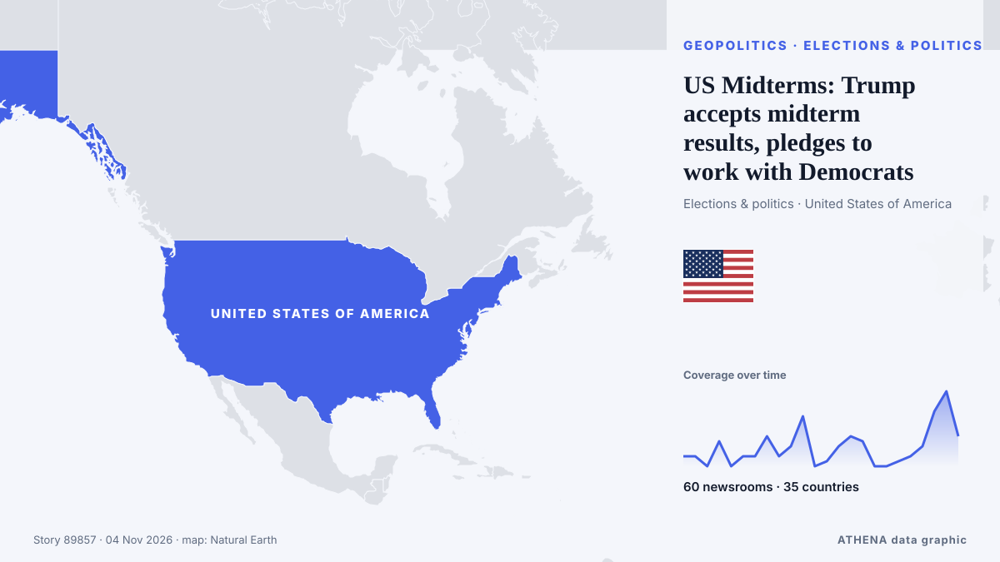

ATHENA Glaux Intelligences — Анализ мировых новостей — каждая цифра объяснена
Мировые новости, проверенные по разным странам
ATHENA Glaux следит за сотнями новостных изданий по всему миру и объединяет их публикации в события. По каждому событию видно, сколько изданий в скольких странах о нём сообщили, кто был первым, и оценку риска с её причинами — с обновлением каждые 10 минут, на семи языках.
В прямом эфире новостейUS Midterms: Trump accepts midterm results, pledges to work with Democrats60 изданий · 35 стран · Риск 2.4 · Источники: Al Jazeera English, The Straits Times

ГеополитикаUS Midterms: Trump accepts midterm results, pledges to work with Democrats
Democrats remain ahead in national polls as Trump and candidates make their final push in the days before polling day. из Al Jazeera English
Заголовки приводятся на английском языке, как они были опубликованы.
US Will Halt $4 Billion in Aid to Israel, Trump Says
Says democrats, left-wing politicians using US financial support to Israel as a talking point to criticise Republicans. из Express Tribune

Сегодня в цифрах
| 06:00 | 571 |
|---|---|
| 07:00 | 435 |
| 08:00 | 2005 |
| 09:00 | 550 |
| 10:00 | 897 |
| 11:00 | 795 |
| 12:00 | 764 |
| 13:00 | 1148 |
| 14:00 | 836 |
| 15:00 | 976 |
| 16:00 | 602 |
| 17:00 | 819 |
| 18:00 | 435 |
| 19:00 | 588 |
| 20:00 | 490 |
| 21:00 | 376 |
| 22:00 | 459 |
| 23:00 | 626 |
| 00:00 | 323 |
| 01:00 | 352 |
| 02:00 | 400 |
| 03:00 | 417 |
| 04:00 | 410 |
| 05:00 | 471 |
Риск сегодняшних событий
US delivery of 500 Patriot missiles to Ukraine will span 3 years starting in 2030
NATO Supreme Allied Commander Europe General Alexus Grynkewich said the United States continues to supply Ukraine with Patriot interceptor missiles, as well as weapons packages paid for by European… из Ukrinform (English)
Больше всего публикаций
Новые сигналы
- Резкий рост · АктивенJesus de Miguel
- Резкий рост · АктивенCongressional District
- Резкий рост · АктивенNorth Carolina
- Резкий рост · АктивенMount Everest
- Резкий рост · АктивенMillions of Americans
Официальные предупреждения
- Red notification for tropical cyclone FOUR-26. Population affected by Category 1 (120 km/h) wind speeds or higher is 1.156 million .Red · GDACS ·
- Cyber chief: UK facing AI-powered attacks on critical infrastructure within two yearsadvisory · UK National Cyber Security Centre ·
- M 6.0 - 165 km NW of Port-Olry, VanuatuM6.0 · USGS ·
- M 6.2 - 43 km ESE of Port-Olry, VanuatuM6.2 · USGS ·
ATHENA в Telegram
Вступите бесплатно в группу ATHENA Glaux и получайте новости сразу после их публикации здесь:
- срочные события с риском 6 и выше
- ежечасная сводка главных событий
- обновления мониторинга рисков
- ежедневная сводка каждое утро в 10:00 (по Афинам)
- недельный прогноз
- официальные предупреждения, ранние сигналы и растущие риски
Нажмите кнопку, откроется Telegram, нажмите «Вступить». Публикации на английском; можно отключить звук или выйти в любой момент. Нет Telegram? Бесплатно на telegram.org.
Мониторинг рисков
Ещё ›Глобальные риски — неделя 45, 2026 (2–8 нояб.) ›
Геополитика, политика и безопасность
Ещё ›US midterms: Democrat Annie Andrews wins US Senate seat in South Carolina upset over Darline Graham
Andrews, a paediatrician, is the first Democrat to win a Senate seat in South Carolina in 28 years. из The Straits Times
- Выборы и политика
Polling stations close in several US states in midterm congressional elections - UPDATED
- Дипломатия и саммиты
Kremlin confirms trilateral talks on Ukraine set for Nov 10-11 in Abu Dhabi
- Выборы и политика
Democrat Jon Ossoff wins reelection to US Senate in Georgia
- Выборы и политика
US midterms: All eyes on crucial Michigan Senate race
Экономика, финансы и рынки
Ещё ›Uber pays its drivers ‘wages’ and is liable for $81m payroll tax bill, Australia’s high court rules
Rideshare company unsuccessfully argued it didn’t employ workers and claimed money paid was not wages under NSW law The rideshare behemoth Uber has suffered a bruising loss in Australia’s high court… из The Guardian
- Акции, облигации и рынки
Gold Falls 0.65% to US$3,922 as US Yields Rise | Gold & Silver, Nov 3
- Криптовалюты и цифровые активы
North Korea warns of stronger response to US ‘hostility’
- Акции, облигации и рынки
Pierce Brosnan Endorses Callum Turner As Next James Bond As “He’s So Strong”; Josh O’Connor Reacts To Talk Around 007 Casting
- Акции, облигации и рынки
NNPC eyes 10% equity sale, London, New York listings
Торговля, промышленность и инфраструктура
Ещё ›Two Ryanair flights from Dublin searched after potential bomb threats
Ryanair appears to be the worst-affected airline as at least 10 similar incidents were reported across Europe. из Evening Standard (London)
- Авиа, ж/д и дороги
Hoax bomb threats disrupt flights in Europe
- Авиа, ж/д и дороги
Kazakhstan to Produce 494 Medicines Under $ 862 Million Investment Plan
- Торговля и соглашения
Trump says US close to trade deal with Canada, Carney says work remains
- Судоходство и порты
DP World strengthens China–Africa corridor with new shipping link
Энергетика, ресурсы и экология
Ещё ›Brent crude oil price falls below $111 per barrel for the first time since October 22
By 05:14 a.m. Moscow time, Brent was trading at $110.68 per barrel. из TASS (English)
- Нефть и газ
METLEN Signs Five-Year US LNG Supply Deal With Shell
- Загрязнение и биоразнообразие
Mother and daughter dead in suspected grizzly bear attack near Bella Coola
- Нефть и газ
New Jersey governor warns port operators against importing Russian diesel
- Климат и климатическая политика
CMA CGM, Nike and Gemadept officially launch electric barge in Vietnam
Технологии, ИИ и кибербезопасность
Ещё ›Google AI chatbot may break press copyright rules: EU legal adviser
Google’s AI chatbot Gemini may infringe press copyright rules by reusing published content to generate answers, as highlighted by an EU legal adviser in a landmark case involving Hungarian publisher… из IOL
- Космос и спутники
NASA's Swift Observatory to re-enter Earth's atmosphere
- Искусственный интеллект
Anthropic Reports $17 Billion Quarterly Revenue Ahead of IPO
- Кибербезопасность
Supermarket freezers in several European countries hit by apparent cyberattacks
- Кибербезопасность
Europe on alert after supermarket freezers hit by cyber-attacks in 10 countries
Бизнес, компании и инвестиции
Ещё ›Libya's top religious authority rules against wearing Nike clothes
The US company was named after the Greek goddess of victory, so the Dar al-Ifta said displaying its logo was unIslamic. из BBC News
- Стратегия компаний
Canva layoffs: design giant to cut or relocate more than 1,200 jobs in major restructure
- Отрасли и риски компаний
Major automakers urge US Congress to pass permanent ban on Chinese vehicles
- Банкротства и реструктуризация
Artists stage flash mobs at scenic spots in Dunhuang, NW China's Gansu
- Слияния и поглощения
StormGeo acquires Portchain to accelerate Just-in-Time voyage optimisation at scale
Здоровье, наука и исследования
Ещё ›Ethiopia attacks kill civilians as health system nears collapse, WHO chief says
The World Health Organization reports that attacks in northern Ethiopia are pushing the region's fragile health system closer to collapse. из ABC News (International)
- Прорывы
South Carolina elects Democratic senator for first time in almost three decades
- Системы здравоохранения
Midterms: Abdul El-Sayed, Mike Rogers face off for Michigan Senate seat
- Научные открытия
Evidence of red blood cells found in 115-million-year-old dinosaur’s bones
- Медицинские исследования
Global cervical cancer cases, deaths forecast to rise by 2050: study
Общество, право и госполитика
Ещё ›Spanish transport minister resigns days after deadly train crash
At least 69 people were killed and dozens injured in the collision south of the capital, Madrid. из BBC News
Спорт
Ещё ›Photos: Champions League and Tenerife fans pay tribute to De Miguel
CD Tenerife forward Jesus de Miguel died after suffering cardiac arrest following an on-field collision. из Al Jazeera English
- Формула-1 и автоспорт
Kansas Elects Its First Democratic Senator in 94 Years
- Олимпиада и другие виды
NYC Marathon runner, 24, dies after collapsing 2 miles from finish
- Футбол
What Michael Carrick was thinking after Manchester United's Champions League comeback vs Roma
- Олимпиада и другие виды
Canada to deny visas to Russian hockey players — PM Carney
Культура, люди и стиль жизни
Ещё ›Aaron-Roy King, Pang Ron-Pei Jing fall in Hylo Open semi-finals
KUALA LUMPUR: Malaysia's impressive run of winning at least one title at each of the previous three stops of the European swing came to an end after Aaron Tai-Yap Roy King and Hoo Pang Ron-Lai Pei… из New Straits Times
- Кино и ТВ
‘The Remarried Empress’ Gets Surprise Early Premiere On Disney+/Hulu
- Кино и ТВ
‘India went through a dark phase’: Sachin Tendulkar opens up on captaincy stint
- Монархи и знаменитости
King Charles calls slavery 'monstrous injustice' as PM mulls apology
- Музыка
My Chemical Romance Leads ‘Parade’ of Reissues Marching Onto Billboard 200 Albums Chart